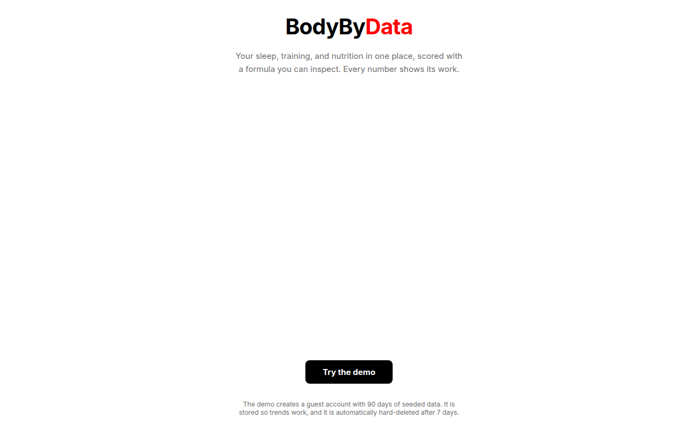
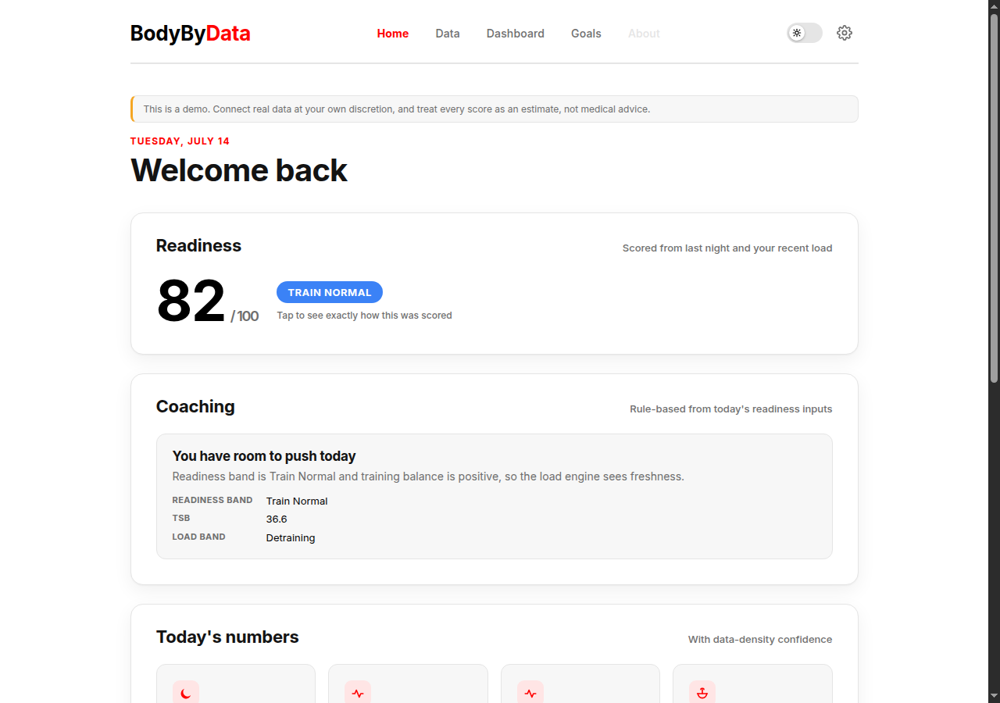
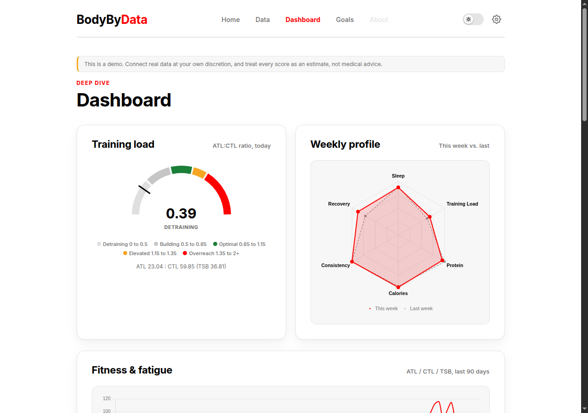

Product and Engineering Case Study
A transparent personal health analytics demo, built to turn fragmented sleep, training, and nutrition data into one inspectable daily picture.
Working public demo · React and FastAPI · every score explains its inputs
01
The Problem
Health data is easy to collect and hard to use. Sleep lives in one app, training in another, and nutrition somewhere else. The products that summarize it often return a single score without showing how the number was made. BodyByData was built around the opposite promise: normalize the sources, calculate the signals in a separate intelligence layer, and expose every component, input, weight, and confidence value to the person reading the result.
The original demo targeted people who already track. Its next product question is broader: what should happen when the user has no watch, no connected app, and no history at all? That question becomes the post-demo expansion described later in this page.
02
Designing the Build
BodyByData did not begin as a pile of routes and components. The project plan settled the architecture, deployment, review workflow, privacy constraints, and eight-sprint sequence before the application repository existed.
The boundary written before the build
ingest/ normalizes source data, no analytics core/ calculates readiness, confidence, goals, no I/O models/ persists normalized values with provenance api/ joins persistence and pure calculations frontend displays the result and the reasoning
That separation mattered when the first seed implementation placed confidence calculations inside ingestion. Sprint 2 exposed the violation through a duplicate-writer failure. Confidence moved into the recompute service, and ingestion returned to being source normalization only.
Real finished artifacts



03
System Architecture
The normalized daily hub is the architectural center. Source adapters can change without rewriting scoring. Intelligence can change without learning file formats. The interface can show the calculation because the API returns the same breakdown the core function created.
04
From Inputs to Signals
The readiness layer reads five components. Each component carries a raw explanation, normalized value, weight, contribution, and a separate confidence result based on recent data density.
| Component | Source signal | Confidence window |
|---|---|---|
| Sleep quality | Source sleep score, with duration as fallback | 7 days |
| HRV balance | Today compared with a 7-day SDNN baseline | 7 days |
| Resting heart rate | Today compared with a 7-day baseline | 7 days |
| Training-load balance | ATL divided by CTL, using 7-day and 42-day EWMAs | 42 days |
| Nutrition adherence | Calories and protein compared with visible targets | 7 days |
Confidence is density, not belief
confidence = min(1.0, days_of_data / window_days)
{
"component": "hrv_balance",
"confidence": round(confidence, 3),
"days_of_data": days_of_data,
"window_days": 7,
}A sparse component is not hidden and is not described with false certainty. The interface can say both what the score used and how much history supports it.
05
The Readiness Formula
The score is a weighted sum of normalized components. Missing inputs take a neutral path with an explicit explanation rather than becoming zero adherence.
Current production weights
WEIGHTS = {
"sleep_quality": 0.30,
"hrv_balance": 0.25,
"resting_hr": 0.15,
"training_load_balance": 0.20,
"nutrition_adherence": 0.10,
}
score = round(sum(component["contribution"] for component in breakdown))The same five weights returned by the public methodology endpoint
| Score | Band | Interface meaning |
|---|---|---|
| 85 to 100 | Train Hard | The strongest readiness band |
| 70 to 84 | Train Normal | Normal planned work |
| 50 to 69 | Train Easy | Reduce intensity or volume |
| 30 to 49 | Active Recovery | Bias toward light movement |
| 0 to 29 | Rest Day | Protect recovery |
Coaching remains deterministic. Each rule cites the exact values that fired it. A suggestion can point to HRV against baseline and negative TSB rather than asking the user to trust generic advice.
06
Eight Sprints
The project was ordered as a walking skeleton first, then a deliberate thickening of data, intelligence, interface, integrations, and trust.
| Sprint | What became true |
|---|---|
| 00 | One repository, CI, Render deployment, live frontend-to-API path, review workflow |
| 01 | Models, migrations, auth, lifecycle, and 90-day deterministic demo data |
| 02 | Readiness, ATL, CTL, TSB, confidence, goals, recomputation, golden tests |
| 03 | Design system, typed client, Home, Dashboard, and real charts |
| 04 | Data, Goals, provider cards, export, deletion, settings, onboarding |
| 05 | Apple Health XML upload and normalized ingestion with temporary-file deletion |
| 06 | Hevy sync and Cal AI PDF review-before-commit flow |
| 07 | Hardening, privacy verification, coaching, screenshots, audits, launch script |
| 08 | Body-composition ranges, manual entry, goals, uncertainty, provider-ready boundary |
Sprint 8 was post-launch in the original roadmap, but it is included here because it completed before this case study was assembled.
07
Problems Encountered
7.1
Equivalent local checks were not equivalent
The first CI run could not import the backend. Local verification used python -m pytest, while CI used pytest. The project fixed Python-path configuration and adopted a stricter rule: run the exact CI invocation before push.
7.2
The gauge fix was wrong twice
A crowded decimal on the training-load gauge was first treated as precision, then spacing. The actual overlap came from a decorative pivot dot. Removing it fixed the visual problem without changing the number. The failed diagnoses remain in the logs.
7.3
The API was healthy and the browser still failed
The custom domain's demo login returned a successful API response, but Safari showed a network error. The missing CORS header was the failure. Canonical production origins moved into backend configuration and were unioned with environment values.
Production CORS repair
for origin in (*CANONICAL_PRODUCTION_ORIGINS, *configured):
if origin not in seen:
seen.add(origin)
origins.append(origin)7.4
Not every planned integration became live
Sprint 8 created a photo-estimation provider boundary but did not receive authority or account setup for a live external provider. The interface does not upload image bytes to a disabled endpoint. Manual ranges and uncertainty bands keep the demo truthful while the external dependency remains deferred.
08
Prompt Engineering and Review
Prompts functioned as executable project briefs. Each one carried scope, architecture rules, acceptance criteria, verification commands, documentation duties, and a stopping condition.
Early workflows stopped after pushing a commit, leaving the owner to move CodeRabbit findings between tools. Later prompts assigned the agent the full loop through re-review and merge. Better ownership came from a better process definition, not only a different model.
The three living logs made review observable:
| Log | What it preserved |
|---|---|
| PROMPT_LOG | Scope changes, failures, prompt corrections, and deviations |
| SECURITY_LOG | Threat surface, findings, fixes, audits, and accepted risk |
| CODERABBIT_LOG | Every automated review finding and its disposition |
09
Privacy and Security
Privacy claims were treated as testable behavior. Uploaded Apple Health and Cal AI files use temporary storage and are deleted on success and failure. Demo guests expire after seven days. User-owned tables cascade on account deletion. Hevy keys are encrypted at rest. Account export enumerates the same model metadata used by lifecycle tests.
| Contract | How it was enforced |
|---|---|
| No raw uploads retained | Success and rejection tests prove temporary files are removed |
| Real deletion | Foreign-key cascade meta-tests cover every user-owned table |
| Guest expiration | Seven-day TTL plus scheduled lifecycle sweep |
| Bounded requests | Body-size middleware and endpoint-specific validation |
| Abuse resistance | Rate limits on auth, seed, recompute, and destructive routes |
| Dependency review | Python and production npm audits during hardening |
At Sprint 7 closeout, the repository recorded 255 passing backend tests, a clean Python lint pass, a green frontend production build, clean declared Python dependencies, and zero production npm vulnerabilities. Sprint 8 added more functionality afterward, so this number is presented as a dated milestone rather than a current total.
10
The Working Demo
A stranger can create a guest session with 90 days of deterministic data. The last two weeks tell a deliberate story: hard training suppresses HRV and pushes training balance negative, then a recovery week raises HRV and readiness.
Two-minute path
Landing create guest and seed the story Home inspect readiness components and cited coaching Dashboard follow fatigue, fitness, sleep, nutrition, and strength Data inspect sources, export, and deletion Settings reset the deterministic guest story
11
Where This Goes Next
The finished demo serves people who already collect data. The next product expansion serves the person who is just beginning.
Simple Start introduces a two-minute baseline and a 20 to 30-second Daily Pulse. A user can begin with sleep quality, energy, and whether they trained. BodyByData returns a separately labeled Starter Estimate, shows the self-reported inputs, and explains how much history supports the result.
The starter model does not silently merge with connected readiness. When connected history becomes sufficient, the interface explains the model change and preserves earlier history under its original label.
12
Built With
React, TypeScript, Vite, Chart.js, FastAPI, Python, SQLAlchemy, Alembic, Postgres, SQLite for tests and local work, PyJWT, cryptography, pdfplumber, Open Wearables code adapted under MIT, pytest, ruff, GitHub Actions, CodeRabbit, Render, and optional Sentry integration.
13
Skills Exercised
| Skill | Tools used | How it was applied |
|---|---|---|
| Product management | Sprint plans, acceptance criteria, living handoffs | Sequenced a walking skeleton into eight bounded sprints with explicit non-goals and completion tests |
| Data architecture | SQLAlchemy, Postgres, Alembic | Designed normalized source tables around a daily hub with provenance and cascade lifecycle rules |
| Applied analytics | Python | Implemented readiness components, ATL, CTL, TSB, confidence density, goals, and deterministic coaching |
| API engineering | FastAPI, typed schemas, JWT | Built auth, lifecycle, imports, summaries, goals, methodology, and demo endpoints |
| Frontend engineering | React, TypeScript, Chart.js | Built a responsive four-page product with typed data, charts, forms, confidence, and failure states |
| Security and privacy | Middleware, encryption, audits, regression tests | Verified upload deletion, cascade deletion, rate limits, body caps, token behavior, and dependency health |
| Prompt engineering | Claude, Cursor, structured sprint prompts | Used prompts as scoped project briefs with invariants, review ownership, evidence requirements, and stopping conditions |
| Review operations | GitHub Actions, CodeRabbit, living logs | Tracked findings through fix, rebuttal, re-review, merge, deployment, and live verification |
| Visual design | Design tokens, responsive CSS | Carried a consistent dark product system into cards, charts, mobile navigation, disclosures, and data-heavy layouts |
| Technical communication | Markdown, HTML, diagrams, screenshots | Maintained implementation logs and built this evidence-based public case study |
14
Sources and Citations
The writing and layout of this showcase page were produced with AI-assisted editing under the project owner's direction; the application claims are grounded in the repository artifacts linked below.
Internal engineering claims trace to the application source, tests, history, and living logs. Outside code and research are credited separately.
Project evidence
[1]BodyByData_main. Application source, tests, project plan, sprint prompts, status history, security log, prompt log, and CodeRabbit log.
[2]Triad Showcase. The design and editorial reference for this public engineering paper.
Outside code and research
[3]The Momentum, Open Wearables. MIT-licensed Apple Health parsing, model patterns, and seed-generation code adapted and attributed in the application repository.
[4]Ferreira TJ, Salvador IC, Pessanha CR, et al. "Advances in the estimation of body fat percentage using an artificial intelligence 2D-photo method." npj Digital Medicine 8, 43 (2025). Referenced by the project's body-composition roadmap when defining estimate ranges and uncertainty.
Page production
Source Serif 4 and JetBrains Mono through Google Fonts, Chart.js for the weight chart, highlight.js for code syntax, inline SVG for architecture and process diagrams, GitHub for source control, and GitHub Pages as the intended static host.